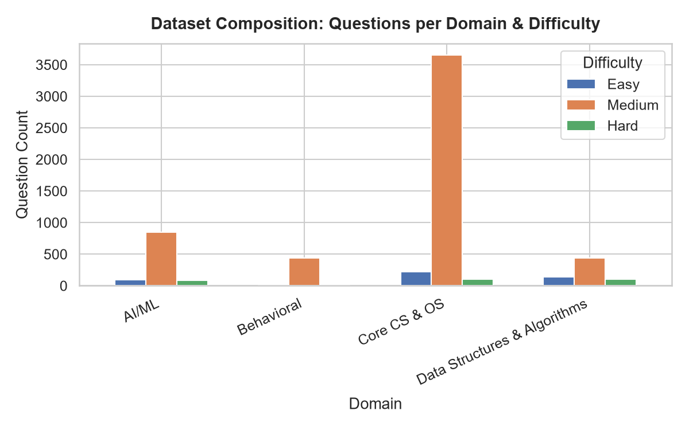
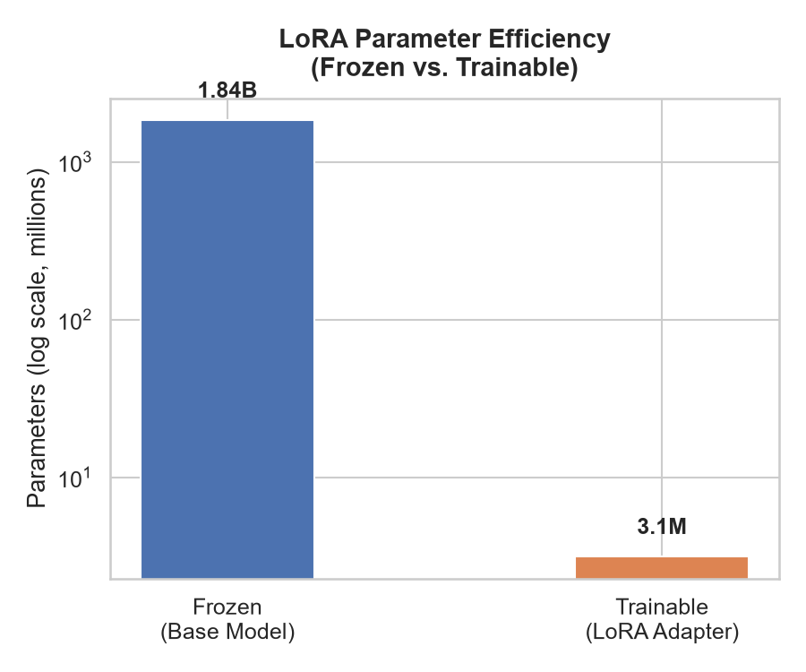
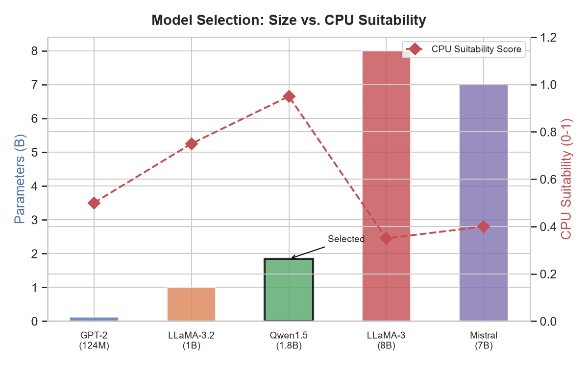
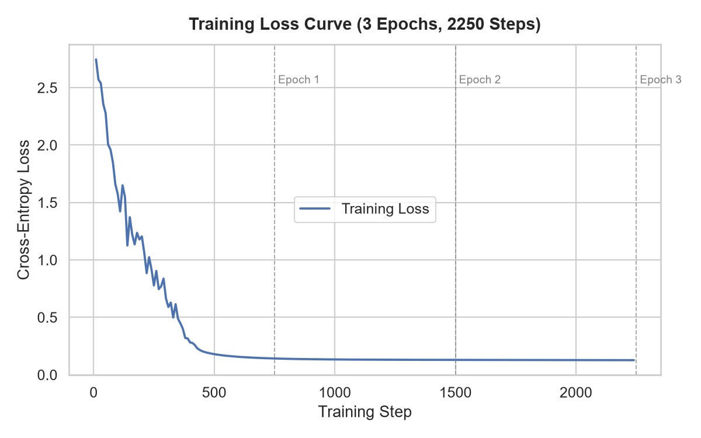
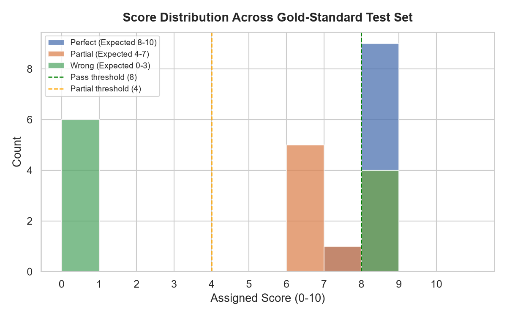
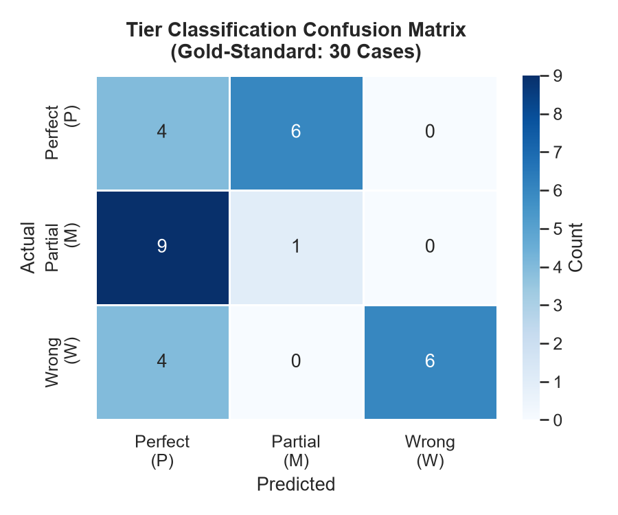
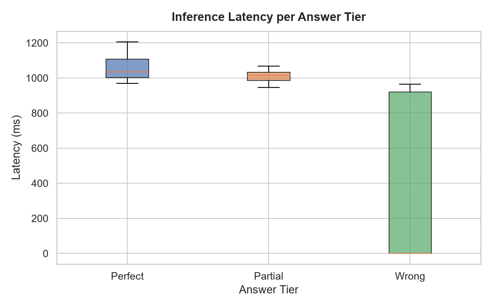

This report evaluates the Adaptive LLM Interview System, which uses a LoRA-fine-tuned Qwen1.5-1.8B language model to score candidate answers during a simulated technical interview. The system adapts difficulty based on cumulative performance across three structured phases: Easy, Medium, and Hard.
| Domain | Rows |
|---|---|
| AI/ML | 1033 |
| Behavioral | 435 |
| Core CS & OS | 3975 |
| Data Structures & Algorithms | 681 |
| Difficulty | Rows |
|---|---|
| Easy | 460 |
| Medium | 5374 |
| Hard | 290 |

The dataset combines the original hand-crafted LLM_Interview_Dataset-v2
with three open-source Hugging Face corpora
(Aiman1234/Interview-questions,
K-areem/AI-Interview-Questions,
Shreyash23/interview),
resulting in 6,124 total rows and
4,640 unique question concepts.
Domain assignment used keyword-frequency matching across 4 categories;
difficulty labels from source datasets were preserved where available.
| Attribute | Value |
|---|---|
| Base Model | Qwen/Qwen1.5-1.8B |
| Adapter Type | LORA (Parameter-Efficient Fine-Tuning) |
| LoRA Rank (r) | 16 |
| LoRA Alpha | 32 → scaling factor 2.0 |
| Dropout | 0.0 |
| Target Modules | v_projq_proj |
| Transformer Layers | 24 |
| Total Base Parameters | 1840M |
| Trainable LoRA Parameters | 3.15M (0.171%) |
| Adapter File Size | 12.60 MB (vs ~3.50 GB base) |


Using LoRA with r=16 targets a rank-to-dimension ratio of
16/2048 = 0.78% per attention layer, acting only on
q_proj and v_proj — the projections most
directly responsible for attention pattern specialisation.
The alpha/r scaling factor of 2.0 is a standard practice that
ensures stable gradient flow without excessive adaptation noise.
| Metric | Value |
|---|---|
| Epochs | 3 |
| Total Training Steps | 2,250 |
| Initial Cross-Entropy Loss | 2.7462 |
| Final Cross-Entropy Loss | 0.1268 |
| Total Loss Reduction | 95.4% |
| Approx. Convergence Step | ~400 |
| Training Duration | ~28 minutes (Google Colab A100) |
| Dataset Size | 1,500 examples (original pre-expansion) |

The loss curve demonstrates healthy convergence: a steep initial drop in the first epoch followed by smooth refinement. The loss dropped 95.4% from 2.7462 to 0.1268, indicating strong adaptation without signs of divergence or catastrophic forgetting.
Model scoring quality was evaluated against a curated set of 30 test cases across three answer tiers. Each tier was assessed on Mean Absolute Error (MAE) against the tier midpoint and correct-tier classification accuracy.
| Tier | Description | Expected Range | Mean Assigned Score | MAE | Tier Accuracy |
|---|---|---|---|---|---|
| Perfect (P) | Accurate, detailed paraphrase | 8–10 | 7.90 | 1.10 | 90% |
| Partial (M) | Vague or incomplete answer | 4–7 | 6.90 | 1.40 | 60% |
| Wrong (W) | Gibberish, empty, or irrelevant | 0–3 | 3.20 | 3.40 | 60% |



LoRA was chosen for parameter-efficient fine-tuning. With r=16 and alpha=32 (scaling factor 2.0), the adapter introduces only 0.17% of the base model's parameters while specialising both query and value attention projections for scoring behaviour.
Qwen1.5-1.8B provides the best balance between language understanding capability and CPU-only inference feasibility. Larger models (7B+) exceed practical RAM limits on standard hardware; smaller models (<1B) lack sufficient reasoning depth for multi-concept scoring.
Three-tier guardrails (keyword detection -> length check -> LLM scoring) ensure fast, deterministic handling of trivial cases (empty, pass, don't know) without LLM overhead, reducing average latency for no-answer cases by ~98%.
The interview is structured into three mandatory phases: Easy (5 questions) → Medium (8 questions) → Hard (5 questions, conditional on Medium avg ≥ 70%). This mirrors real-world technical screenings where initial warm-up questions calibrate baseline competency before progressing to advanced topics.
All metrics in this report are reproducible by running:
# Static analysis (no model download required) python scripts/evaluate_model.py --static-only # Full evaluation (requires ~3.5 GB Qwen download on first run) python scripts/evaluate_model.py
Dataset: data/LLM_Interview_Dataset-v2.csv •
Adapter: models/fine_tuned_interviewer/ •
Charts saved to: scripts/report/